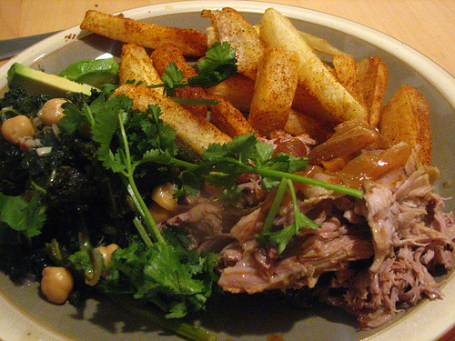

Home
Pernil

Many, many moons ago, I published my recipe for pernil, the delicious Puerto Rican roasted pork butt/shoulder.
Recently, I had a whole Saturday afternoon to try a longer and slower cooking method for my bone-in pork butt. I
have to tell you, if you have the time I would advise cooking it this way as you will have meat absolutely
dripping moist and falling off the bone. The quicker method in my earlier recipe is a very good way of cooking
the pork if you don’t have 8-9 hours to kill waiting to tear into the pernil. But, if you do remember to put
your pork in by 11AM, you will not be disappointed by the results of low and slow cooking.
Ingredients
- 1 Bone-In Pork Shoulder (5-10 Pounds depending on how many you want to feed, 5 Pounds will feed 4-5 hungry
people)
- 5-8 Cloves garlic, some chopped, some sliced
- Adobo (or a mixture of garlic power, onion powder, cumin, black pepper, salt and oregano)
- 1 Bottle of Sour Orange Marinade (or 2 Oranges and 1 Lime OR 1 Cup OJ and 2 Limes)
- 1 Large Onion, chopped up
- olive oil
Steps
Marinade:
- 1. Take your big-ass, delish pork shoulder/butt, place it in a baking dish skin-side up and sprinkle it
**all over** w/ _adobo_ (Goya makes a few versions of this that you can keep in your spice cabinet or you
can make your own by sprinkling **garlic power, onion powder, cumin, black pepper, salt and oregano** all
over the pork). WHEN I SAY SPREAD IT ALL OVER I MEAN SPREAD IT _ALL_ OVER. Don’t be afraid of putting on too
much.
- 2. Cut slices of garlic up from about 3 cloves of garlic – make slices thick-ish. (NOTE: If you have the
extra time, make a paste out of your garlic by smashing it in a mortar and pestle w/ a bit of salt to aid in
the smashing until it has the consistancy of a spreadable paste.) ******NOTE:** _This recipe uses alot of
garlic b/c we love alot of garlic. If you don’t like the taste of garlic, maybe this recipe isn’t the best
for you._
- 3. Take a sharp knife (a steak knife should be fine) and make 1-inch wide (1 inch deep or so) slits all over
the pork, skin and all. Every time you make a slit, slide in a slice of garlic into the slit. It’s best if
the garlic goes into the hole all the way. If it doesn’t, again, don’t worry… just make a bit of a deeper
slit next time. (NOTE: If you made the garlic paste, then just slide a bit of the paste in each slit instead
of the sliced garlic.)
- 4. MAKE MARINADE IN SEPARATE BOWL: Add one cup of sour orange juice (again, Goya makes a bottled version,
I’m sure it’s not as tasty as the real ones, but sour oranges aren’t around all the time to buy) to 3 cloves
of chopped garlic and 1 chopped large onion. Add a sprinkling of salt and pepper and well as some extra
oregano. Mix. (NOTE: You can also substitute sour orange w/ a cup of regular Orange Juice mixed w/ the juice
of two limes, or juice of 2 oranges, juice of 1 lime.)
- 5. Pour your marinade over your pork. Let sit for at least 3 hours, preferably overnight).
Cooking the Pernil: